阿賀野市の山中にある神社が凄いという噂を聞きつけて行ってみる事に。
神社へ向かう道は舗装はされてはいるものの、この先本当に神社などあるんだろうか？と思わざるを得ないような雰囲気。
道はどんどん鬱蒼としてきて、あと10分走って何もなかったら引き返そう、と心に決めた瞬間、神社に隣接する小さな広場が見えてきた。
車を停め、神社があるであろう場所に向かって歩いて行く。
やがて神社が見えてくる。
立石山神社という。
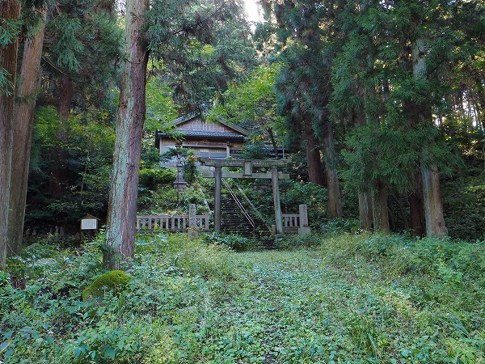
この神社は明治以前は虚空蔵様と呼ばれ、神仏習合の修験道者が信仰する場所だったとか。
御神体は社殿の奥にある高さ8メートルの山神石という巨岩。
明治になり、神仏分離令により本地仏を廃し、大山祗大神を祭神にして、立石山神社となった。
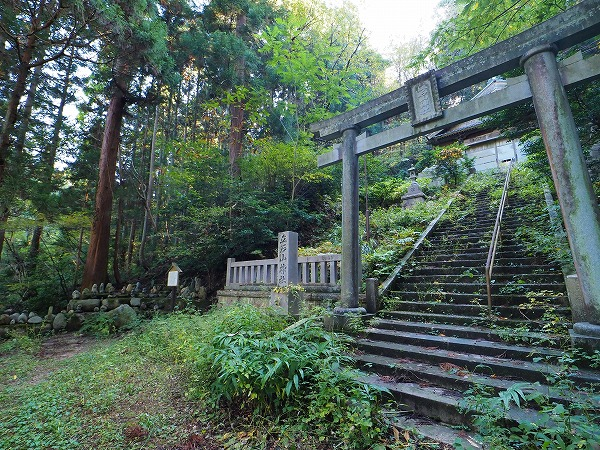
その後、安産と子孫繁栄の神として地元だけでなく広範囲の信仰圏を誇ったという。
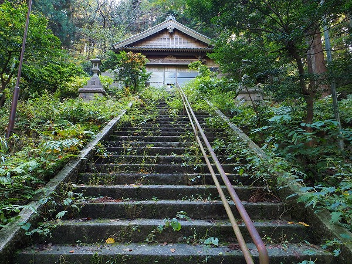
社殿は緑に覆われており今では訪れる人もあまりいないような雰囲気。
階段には雑草が生え、さらにその先の山神石への道は草木で覆われており先に進む事さえままならない。
そんな神社の一画に不思議な光景が繰り広げられている。
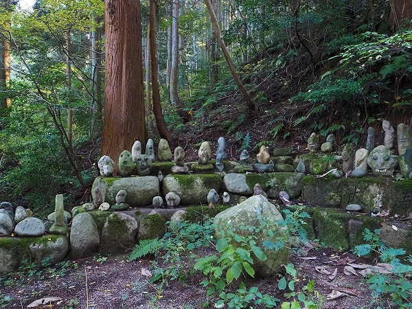
拝殿へと向かう階段の脇に無数の石が積まれているのだ。
大きさは小さなもので１０ｃｍ程度。大きなものでも４０ｃｍほど。
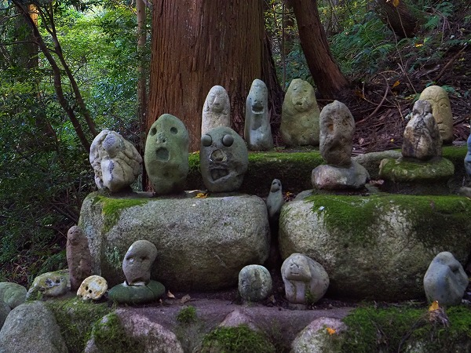
それらは全て人の顔のような形状をしているのだ。
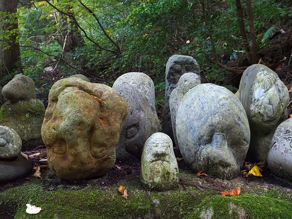
人の顔、とはいえ偶然人の顔のように見えるような自然石から加工して人工的に人の顔に見せているようなモノまで様々だ。
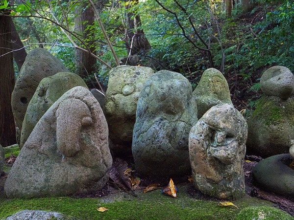
そのほとんどは自然石に最低限手を加えたようなプリミティブな造形だ。
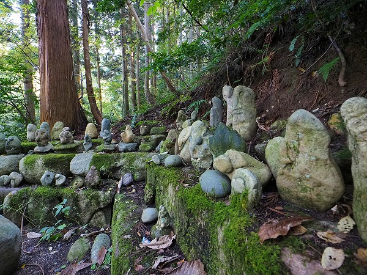
しかし中には目に別の石を嵌めたウルトラマンっぽいものも。
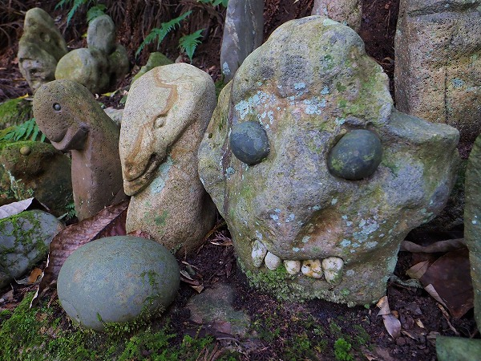
さらに目のみならず歯までつけてあるものまである。
これはかなり不気味だった。
まるで何処か知らない国の呪物のようではないか。
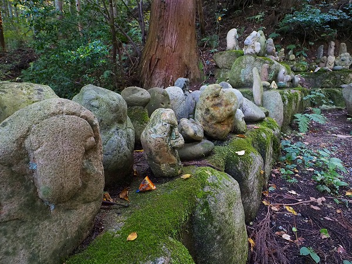
昼なお暗い山の中の神社でこのようなたくさんの人面石を見ていると相当不穏な気分になってくる。
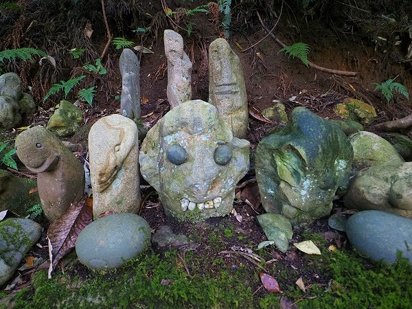
いや、正直不気味だ。
一体このような人面石が何故この神社に奉納されているんだろう、という素朴な疑問がムクムクと立ち上げってくる。
人っ子一人いない神社ゆえ聞き取りもままならないので後日ネットで情報を集めてみる。
それによるとこの人面石は神に捧げるモノではなく、地元の人がシャレで置いたものだという。
つまり信心による奉納ではないようなのだ。
さらに奉納された石の中に年代の判るモノがあった。
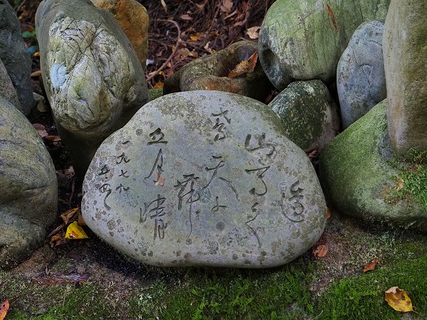
１９７９年５月４日。
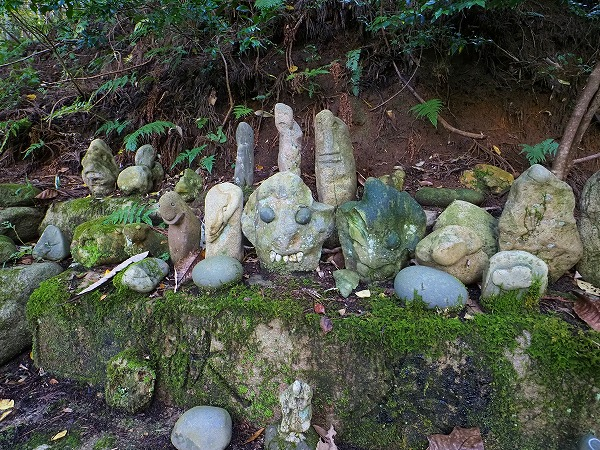
改めて人面石の数々を眺めてみる。
確かに真面目な奉納物ではないように見受けられる。
しかもよく見てみると同じ人物が奉納したモノとしては表現の幅があまりにも大きいように思える。
ここからは私こと珍寺マスターの小嶋がいつものように脳内想像力を２００パーセント拡張いたしましてこの石像の正体を推理してみたいと思う。
このような特殊な奉納に関して重要なのは最初の一個がどうやって奉納されたかを探るのが肝要かと思う。
恐らく最初は変わった石、あるいは偶々顔に見えた石を奉納した所から始まったのではないだろうか。
それは自然の石に対する原初的な、アミニズム的な信仰心から始まったのではなかろうか。
それが次第に人工的な彫像に変わって行き、ついには目や歯を伴ったモノに変容していったと考えられる。
この人面石奉納が仮に独りで成されたと仮定するならば、独りの人物の中で山石神という巨石を信仰するこの神社のアニミズム的石信仰から発展して仮面奉納に進化していったと考えられないか。
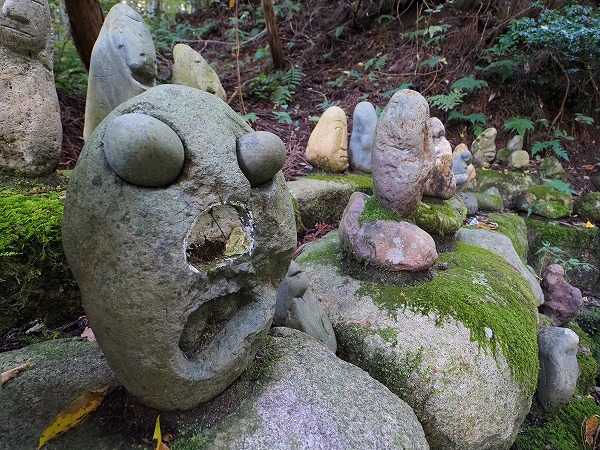
だとすれば、単なるイロモノ奉納物という事象を超えて人類の奉納の歴史を凝縮して表現したものとすら言えるではなかろうか。
誰もいない山の中の神社で今日も明日も明後日も奇妙な面々の人面石同士が顔を突き合わせてああでもない、こうでもないと無言の寄り合いを繰り広げている姿を想像すると恐ろしいイメージとは裏腹に少しユーモラスにも思えてくるから不思議だ。